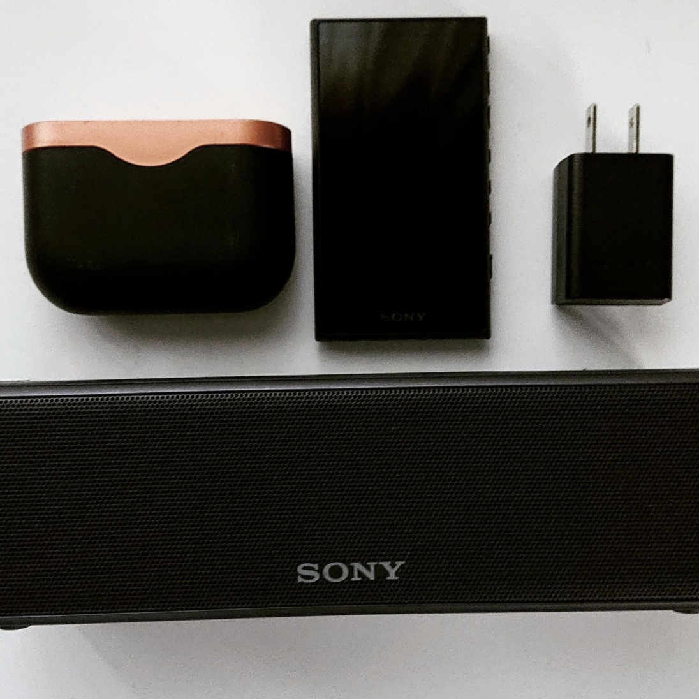

藤井健佑
プロフィール
- 名前：藤井健佑
- 拠点：東京都足立区 ⇔ 秋田県横手市
- 得意分野：演出・企画・AR・イベントプロデュース
- 特徴：構想力重視、テクノロジー融合型演出
- 趣味：舞台鑑賞、映像編集、社会構造分析
関わったイベント
作った作品
- 自主制作ボカロライブ（※要YouTubeリンク修正）
- 磁石祭サブスタジオ演出
もっと詳しく見る
これまでの活動記録や、企画資料、自己紹介スライドなどをまとめたGoogle Driveを公開しています。
より詳しいポートフォリオや資料をご覧になりたい方は、以下のリンクからご確認ください。
スキル
| OS | Windows |
|---|---|
| 映像編集 | Premiere Pro, After Effects, AviUtl |
| 3DCG | Blender |
| 照明・音響 | GrandMA3, REAPER, Audition |
| 演出・AR | Unity, Resolume Arena |
連絡先
- X（旧Twitter）
- kenyu02110211@gmail.com
これまでの歩み
| 2022年 | 超歌舞伎2022 に衝撃を受ける |
|---|---|
| 2025年 | 秋田県立横手清陵学院高校 卒業 |
| 同年 | ZEN大学 入学 |